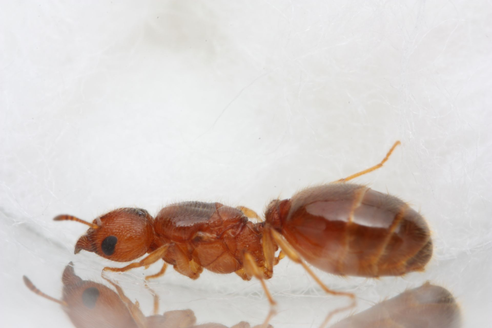
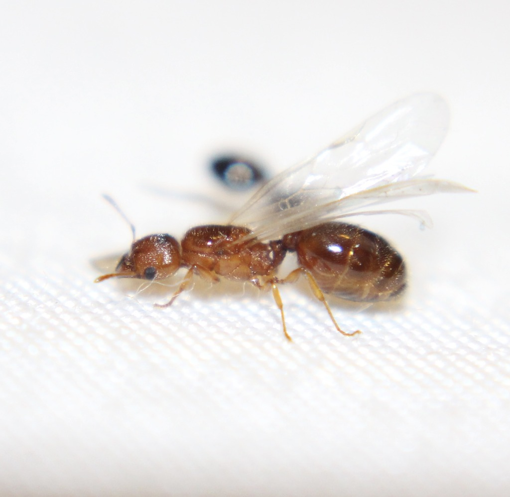
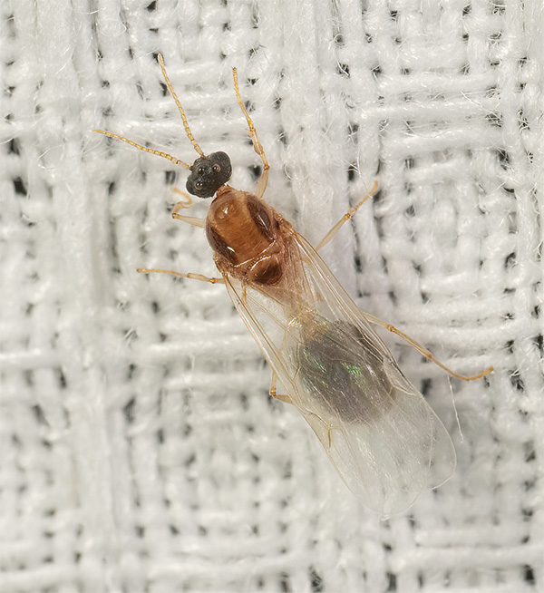
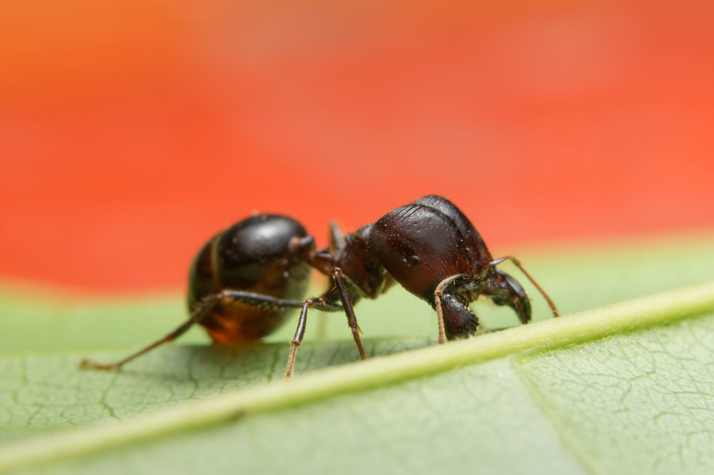
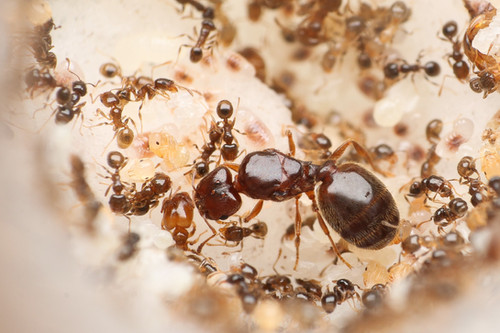

Pheidole bicarinata-Common Big Headed Ant
Species Overview:
Pheidole bicarinata or the Common Big Headed Ant is a small species of Pheidole ant. Pheidole bicarinata has majors and is found in almost every state.
Good to know:
Here is some good to know info about the species!
Scientific name and common name:
Pheidole bicarinata-Common Big Headed Ant
Native or invasive to Utah:
Pheidole bicarinata is native
Are they Polygynous:
Pheidole bicarinata is not
Do the larva spin cocoons or stay naked:
Pheidole bicarinata larva stay naked
Are they claustral or semi-claustral:
Pheidole bicarinata is a fully claustral species
Nest Behavior:
Pheidole bicarinata is known to nest in soil or sometimes in or under rotting wood. Pheidole bicarinata creates typical dirt mounds at there nest entrances.
What do they eat:
Pheidole bicarinata will eat a wide variety of foods, this includes insect parts, seeds, honeydew, and other protein sources. Majors are known to store liquid sugar and protein in there social stomachs when it's abundant. Sometimes they will eat large dead ants. Pheidole bicarinata loves there seeds and will have a small pile in there nest that they break open and eat over time.
Founding time and behavior:
Pheidole bicarinata alates fly in June, July, and August. After queens mate with sometimes multiple males they break off there wings and begin wandering around looking for a good place to dig there claustral chamber. Queens can lay many eggs and typically have 5-15 starting workers. Queens have enough muscle tissue to raise there first generation but will run out soon after the nanitics arrive. Brood development takes around 4-6 weeks majors take a bit longer. Majors start to appear pretty quickly, around 20-30 workers. Wild colonies tend to be in the low hundreds of workers but can get into the 3000-4000 range rarely. Colonies grow quickly and can start producing alates after 2-4 years.

A Pheidole bicarinata queen:

A Pheidole bicarinata queen alate:

A Pheidole bicarinata male:

A Pheidole bicarinata major:

A young Pheidole bicarinata colony: